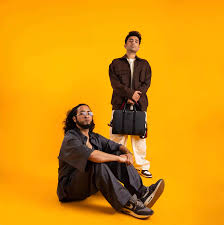

[Intro: Calm] Bhai, kuch din pehle Mere ek dost ne mere se pucha "Bhai, thodi zaroorat hai Gyara hazaar rupay pade hai aap pe?" Maine kaha "Bhai, bilkul pade hai" Pata hai, chhe saal pehle mereko Gyaara hazaar kamane ke liye Gyaara din kaam krna padta bhai Hamne bhi sola bar ke liye peti uthayi hai Isko likhna aur Record krne me Paach ghante se zyada nahi laga hoga bhai Gyaara din chhod, un paanch ghanto me, har pandra Minute me Pachaas hazaar se zyada kama rahe they ham dono Haan bhai, hain tere bhai pe gyaara hazaar

[Verse 1: Calm] Haigi aisi Penmanship When I let it drip Tеri bae kahe "Damn" (Ho jaye shuru) Haigе mere bahut known Game bana Warzone Aaja mere sheher Verdansk Yaha bade Combo Down right Django Haige thode Crazy mans Jote chine bouncer tera Aaye jeb me meri, mera street cred max (Max') SM get paid in advance Milunga ya nhi depends Bada bhai chalata Benz Chota bhai chabata chainz' Dono bhai jalate gaind Har jagah 10 out of 10 (Brr) Hai bahut mahnga ye pen Ise ache se aata hai krna Offend
[Verse 2: Encore ABJ] Isse ache se aata hai krna Offend Mujhe ache se aata hai bharna ghusaand Teri (Huh) saath wali zyada pasand Inke zabaa se zyada ye lund hai buland Teri zabaa se zyada, ye kaali surang Tujhe jaana to jaa I've been one with the pen Waise ghar waali Music hai Baahar wali Business hai Ek deri khushi aur ek deri Bahut saara ETH aur bahut saare Rupees hai Aur moti moti Jeb T pe bade bade Louis hai I hold shit down on the map poora khud hi In halwo ki shakalein waha pe ab sooji [Bridge: Encore ABJ] Kavi kehna chahte hai ki jab kavi ne Aapke pitaji ke paise ka kabhi Khaya hi nhi hai toh [Verse 3: Encore ABJ] To bola tu kaisa kala kiski kaisi? Bana khud ko pehle, bana khud ke paise gawa Khud ke jaise bada, khud ke paise sambhal Apne lehze bana apni leh be Aur chal apni leh pe, na chal kiska seh ke Achal hun main waise Par apno pe aaye to Rapte pe, rapte pe Rapte pe, rapte pe Main sikha hu sadko se Apno ke jhagdo se Kal se aur parso se Haato se fisal ke behte huye lamho se Laundo ke khaam-a-khaa bandi ke jhagdo se Phir unhi bandi ke paanch sau aur nakhro se Mummy ki fikar se Papa ke nashe se (Aanh!) Sikha gareebi se Sikha tawajjo se Sikha ki apno ko rakhne ka dil me aur Dill se Jo utare woh lawdo pe bajo pe ahh [Verse 4: Calm & Encore ABJ] Ham jaisa kabhi bhi banega naah In fuddu se laundo ko bharu bhi na Catalogue aisa ki maru bhi na Dete jaara jote aur wo jalate gaye Main banata gaya Reh gaya thoda maal jeb me flight thi ABJ wo bhi daba diya kahi Saala dara bhi na Beta zara bhi nhi Aur ye fuddu launde Aise kare Rap nhi Humse darta ye booth Darega nhi kaise hu bharta jab Booth Hai ganda ye roop hai janta saboot Ab in Rapper'on ko khane me kantaal hai Dude par ye kaam hai Laundo dono bhare-bhusi Aise meri maa bhi puchi "Kaha se aa raha paisa beta?" Wo bhi pareshaan hai To bhi ghoomun sadko me Galiyon me Chain bahar chalu Slow tez yaha pe chale mera naam hai "Sir" [Outro: Calm] Aur ye rap-wap se hat ke bata raha hu bhai tumhe Jebe jaise badi hoti rehti hai Dil chote ho jate hai logon ke Aur bahuto ke dil unke jeb se bhi chote hai To mehnat se paise banao, paise se waqt banao Waqt apne chahne waalo ke saath bitao Pehle khud upar jao Fir dusro ko liye raah banao Bas aage badte jao Dhanyawaad